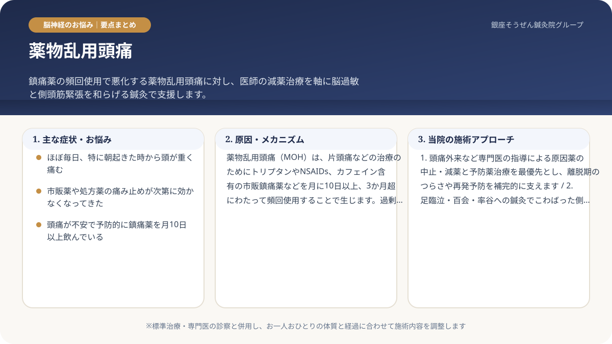
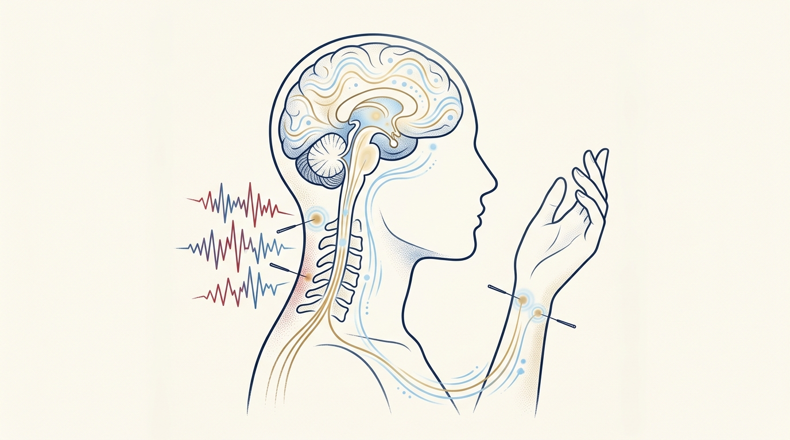

薬物乱用頭痛の鍼灸
鎮痛薬の頻回使用で悪化する薬物乱用頭痛に対し、医師の減薬治療を軸に脳過敏と側頭筋緊張を和らげる鍼灸で支援します。
まず知っておきたい要点と改善の流れ

薬物乱用頭痛（MOH）は、片頭痛などの治療のためにトリプタンやNSAIDs、カフェイン含有の市販鎮痛薬などを月に10日以上、3か月超にわたって頻回使用することで生じます。過剰な服薬が脳の痛みに対する感受性を高めて脳過敏状態と依存を引き起こし、かえって連日の頭痛を招きます。さらに薬物代謝を担う肝臓や腎臓の疲労、側頭筋の強いこわばりが重なることで悪循環に陥り、専門医の管理下での原因薬中止と予防治療が必要になります。
このようなお悩みはありませんか？
- ✓ほぼ毎日、特に朝起きた時から頭が重く痛む
- ✓市販薬や処方薬の痛み止めが次第に効かなくなってきた
- ✓頭痛が不安で予防的に鎮痛薬を月10日以上飲んでいる
- ✓締めつけ感とズキズキする強い発作が混在している
当院の施術アプローチ・改善の流れ
なぜ鍼灸で改善へ向かうのか？（作用機序の図解）
薬物乱用頭痛に対する鍼灸は、脳循環・三叉神経血管系と神経可塑性の調整機序を通じて、お体本来の回復力を引き出します。

百会・風池・合谷などの経穴刺激が三叉神経や大後頭神経・体性感覚路へ穏やかに作用します。
脳幹の自律神経中枢やセロトニン・GABA系のバランスを整え、神経の過敏発火を鎮めます。
後頭下筋群や首深部のこわばりを解き、頭部・内耳・顔面周囲の血流環境をサポートします。
神経回路の再学習（可塑性）と睡眠の質を高め、専門医の治療やリハビリの土台を支えます。
院長YouTube解説・関連動画
薬物乱用頭痛は、痛み止めの薬の使いすぎによって起こる頭痛
薬物乱用頭痛は、痛み止めの薬の使いすぎによって起こる頭痛のことです。特徴は、ほぼ毎日頭痛があり、朝の痛みが特に強いことです。
頭痛薬を飲んでいるのに効かない、頭痛が慢性化した状態の場合は薬物乱用頭痛かもしれません。薬物乱用頭痛では痛み止めの効果が弱くなる、痛みが増す、痛みの場所や質が変わるなど、通常の頭痛とは異なる症状が現れることもあります。
当院では、「頭痛外来でもらった薬をずっと飲んでいても頭痛が改善せず、1日８錠飲んでいる」「台風の前や雨の前、生理の前に頭痛が悪化する」「薬局の痛み止めで誤魔化しているが薬の効きが悪くなりどんどん痛み止めの薬を飲む回数が増えていて不安」などの話をよく聞きます。
これは薬物乱用頭痛といいます。薬物乱用頭痛は偏頭痛をきっかけに起きる頭痛で、近年非常に増えている頭痛です。偏頭痛を放置したり痛み止めで誤魔化したりすると頭痛発作が増えます。この状態を慢性偏頭痛と言い、月に10〜15日起きる頭痛が3ヶ月を超えて続いている場合は要注意です。
この頭痛発作を慢性化させる最も一般的な要因は痛み止めの濫用です。国際頭痛学会では薬物乱用性頭痛（M O H）と呼んでおり、原因となる薬物は偏頭痛発作時に利用するエルゴタミン、トリプタン、アセトアミノフェン、非ステロイド性抗炎症薬のアスピリンとイブプロフェンなどです。
国際頭痛学会の調べによると全ての頭痛の約15%が薬物乱用頭痛で、そのうち女性が7割を占めています。年代は30代から50代に多いです。
頭痛薬の依存はドラッグに似ていることもわかっており、最近は偏頭痛の予防薬を処方する病院も増えています。薬物乱用頭痛は頭痛薬の摂取をやめることで対処できます。
段々と薬への依存がエスカレートしていく
薬物乱用頭痛の原因は、アセトアミノフェンや非ステロイド性消炎鎮痛剤などの鎮痛薬、トリプタン、複合鎮痛薬、エルゴタミン製剤などの薬を常用することです。
頭痛がよく起こる人は、いつ頭痛発作が起きるかわからないという不安から痛いときだけではなく頭が痛くなくても予防として薬を飲んでしまうことが多いです。予防として薬を飲んでいるうちに段々と薬への依存がエスカレートしていく傾向があります。
そのうち薬の量が増え、効き目が続く時間も短くなり、脳の過敏状態が増大し毎日のように痛みを敏感に感じとってしまうようになり薬物乱用頭痛は起こるのです。
【1】トリプタン系薬
例：スマトリプタン（イミグラン）、ゾルミトリプタン（ゾーミッグ）、リザトリプタン（マクサルト）など
【2】エルゴタミン製剤
例：カフェルゴット、ジヒデルゴット
【3】NSAIDs（非ステロイド性抗炎症薬）
例：ロキソプロフェン（ロキソニン）、イブプロフェン（イブ）、ジクロフェナク（ボルタレン）
【4】アセトアミノフェン
例：タイレノール、カロナールなど
【5】オピオイド系鎮痛薬
例：コデイン、トラマドール
【6】カフェイン含有鎮痛薬
例：エキセドリン、ノーシンなど
薬物乱用頭痛は、ほぼ毎日頭痛発作がある
薬物乱用頭痛は、ほぼ毎日頭痛発作があり、ほとんどの人が起床時から頭痛に悩んでいます。頭重感、しめつけ感が続き、時折発作性の激しい頭痛が入り混じるような頭痛が起こります。
以前から時々頭痛があり、片頭痛や緊張型頭痛と言われたことがある、月に15日以上頭痛がある、月に10日以上薬を服用しており3ヶ月以上前から続いている、などのことが当てはまる場合、薬物乱用頭痛の可能性があります。
今まで効いていた頭痛薬が効かなくなったように感じている場合は薬物乱用頭痛かもしれません。
① 頭痛が月に15日以上ある（週に3〜4回以上）
② 市販薬、処方薬を月に10日以上使っている
③ 痛くなりそうな時に予防的に薬を飲んでいる
④ 同じ薬では効きが悪くなってきた気がする
⑤ 薬を飲んでも頭痛がすぐにぶり返す
⑥ 「薬を飲まないと不安」という感覚がある
⑦ 朝起きたときから頭が重く、薬を飲んでから動けることが多い
⑧ 頭痛のタイプや場所が変化してきたように感じる
⑨ 医師から「薬を減らした方がいい」と言われたことがある
⑩ 薬を数日やめると逆に頭痛が強くなることがある
3個以上当てはまる場合→MOHの可能性があります。頭痛日記や服薬記録をつけて医師に相談することをお勧めします。
5個以上当てはまる場合→薬物乱用頭痛の可能性が高いです。薬を見直してみましょう。
薬物乱用頭痛の改善方法は、薬をやめることです。徐々に薬を減らしていくのか、すぐに薬をやめるのかは原因となっている薬によって違います。
どのように薬を中止するのか、薬を中止したあとに起こる頭痛に対してはどのように対処するのか、などのことは医師と相談をすることが大事です。
・原因となっている薬の中止または漸減
頭痛悪化、吐き気、不安感などの離脱症状が一時的に数日〜1週間起こることがあります。この時期は精神的サポートや代替法が非常に重要です。
・頭痛の予防薬導入
薬をやめただけでは頭痛が止まらないこともあるため、予防薬が処方される場合があります。
・ライフスタイルとストレスの見直し
規則正しい睡眠、カフェインの取りすぎを避ける、脱水を防ぐ、PC作業やスマホの使いすぎを控えるなどが大事です。
・鍼灸やマッサージなど
マッサージや鍼灸で頭皮や頸部の緊張緩和、自律神経のバランス調整、脳の過敏性の鎮静化を行います。これらは薬を減らす間の離脱症状緩和や、予防的な体質改善に有効とされます。
薬物乱用頭痛による体のケア
薬では肝臓と腎臓の疲労が起こります。薬は肝臓と腎臓で代謝と排泄をおこなっているため、量が増えると内臓の負荷が大きくなります。肝臓の炎症や腎臓の血流障害も起きやすいため、回復を促すことが大事です。
そのためには期門と大椎のツボが効果的です。この2つのツボは肝臓と腎臓それぞれの機能をアップさせるためお勧めです。1日1セット3回お灸をしてほしいです。
また、偏頭痛は側頭筋のこりが原因のことが多いため、鍼灸では側頭筋の施術で楽になる人が多いです。
期門は肋骨と肋骨の間にあるツボです。第５肋骨と第７肋骨を探ると痛い場所があります。そこにお灸をしましょう。
頚椎を探ると盛り上がった骨があります。その下にお灸をしましょう。
頭痛ダイアリーを活用しよう
薬物乱用頭痛の原因として最も多い薬は、市販の鎮痛薬です。気軽に手に入りやすいこともあり、気がつくと飲む量や回数が増えていることがあるのです。頭痛ダイアリーを活用して服薬日数を確認するようにしましょう。
頭痛ダイアリーとは、頭痛の症状を記録して頭痛のパターンや原因を把握するためのツールです。頭痛の頻度や痛み、持続時間、薬の服用状況など、頭痛に関する様々な情報を記録することで、頭痛のコントロールに役立ちます。
また、病院に行った際は医師の判断の参考にもなります。
片頭痛・緊張型・群発・連日性頭痛のツボ図解
実際の施術ではお一人おひとりの体質・症状に合わせて選穴しますが、片頭痛・緊張型頭痛・群発頭痛・慢性連日性頭痛の予防・鎮静ケアの臨床でよく用いられる代表的なツボの目安です。

📌 代表的なツボの詳細一覧表を開く（6穴） ▼
| ツボ名 | 位置の目安 | 主な狙い | セルフケアの注意点 |
|---|---|---|---|
| 百会（ひゃくえ） | 頭頂部の中央 | 頭全体の重だるさ・自律神経の過敏鎮静 | 突発的な激しい頭痛は直ちに脳神経外科を受診してください。 |
| 率谷（そっこく） | 耳の一番上から指2本分上の側頭部 | 片頭痛のズキズキ感・側頭筋の過緊張緩和 | 拍動性頭痛の発作中は強く揉まず静かに冷やすか遠隔穴を使います。 |
| 太陽（たいよう） | こめかみのくぼみ | こめかみの痛み・眼精疲労由来の頭痛ケア | 指の腹で優しく圧迫してゆっくり離します。 |
| 風池（ふうち） | 後頭部の生え際のくぼみ | 緊張型頭痛・後頭部痛・大後頭神経の緊張緩和 | デスクワークの合間の首ケアに非常に有効です。 |
| 合谷（ごうこく） | 手の甲、親指と人差し指の間 | 三叉神経領域の痛みを遠隔から鎮める国際標準穴 | 片頭痛の予兆を感じたときにも安全に押せます。 |
| 太衝（たいしょう） | 足の甲、親指と人差し指の骨の間 | ストレス・気圧変化・月経関連の頭痛予防サポート | 頭痛専門医の予防薬治療と並行して継続します。 |
国際査読論文の科学的エビデンス
国際的な医学データベース（PubMed・Cochrane等）で報告されている片頭痛・緊張型頭痛・群発頭痛・慢性連日性頭痛の予防・鎮静ケア領域の代表的な査読済み鍼灸研究をまとめています（標準治療との併用や研究上の限界を含めて正確に掲載）。
📚 査読論文データ・PubMed出典リンクを開く（4件） ▼
| 年・研究デザイン | 対象・規模 | 主な結果 | 限界・出典 |
|---|---|---|---|
| 2016年 Cochraneレビュー | 反復性片頭痛 22 RCTs（n=4,985） | 無治療比で頻度半減41% vs 17%（RR 2.40）、予防薬比3か月57% vs 46%（RR 1.24）かつ副作用脱落OR 0.27と優位。 | 1年以上の長期検証は不足。 Cochrane (PMID: 27351677) |
| 2016年 Cochraneレビュー | 脳卒中後リハ 31 RCTs（n=2,257） | 通常リハ併用でBarthel Index（MD 9.19）・Fugl-Meyer（MD 6.16）・嚥下・疼痛改善を示唆、重篤な有害事象なし。 | GRADE低〜非常に低。標準リハビリの補完として位置づけ。 Cochrane (PMID: 27562656) |
| 2024年 シャム対照RCT | パーキンソン病の睡眠障害 78名解析 | 抗PD薬併用下でPDSS睡眠尺度が4週時+19.75点・8週時+20.24点とシャム比有意改善（P<0.001）。 | 単施設・小規模・8週間追跡。標準薬併用が前提。 JAMA Netw Open (PMID: 38922617) |
| 2013年 多施設RCT | ベル麻痺（顔面神経麻痺）338名（ステロイド併用） | 6か月時の顔面神経機能回復は得気手技群が対照鍼群より優位（調整OR 4.16）、QOLも改善。 | 全例プレドニゾン併用。急性期の過剰顔面通電は回避配慮。 CMAJ (PMID: 23439629) |
参考文献・出典
- 2016年 Cochraneレビュー（反復性片頭痛 22 RCTs（n=4,985））— Cochrane (PMID: 27351677)
- 2016年 Cochraneレビュー（脳卒中後リハ 31 RCTs（n=2,257））— Cochrane (PMID: 27562656)
- 2024年 シャム対照RCT（パーキンソン病の睡眠障害 78名解析）— JAMA Netw Open (PMID: 38922617)
- 2013年 多施設RCT（ベル麻痺（顔面神経麻痺）338名（ステロイド併用））— CMAJ (PMID: 23439629)
よくある質問（FAQ）
Q. 痛み止めを急にやめるのが不安ですが、どうすればよいですか？▼
Q. どれくらいの頻度で薬を飲むと薬物乱用頭痛になりますか？▼
あわせて読まれる関連疾患（脳神経のお悩み）
脈打つ強い痛みや光・音への過敏を伴う片頭痛に対し、首肩の深層筋と自律神経を整えて発作頻度と負担の軽減を目指します。
頭を動かした瞬間の回転性めまいに対し、首肩の緊張緩和と内耳循環・自律神経調整、寝返り運動で再発予防を支援します。
末梢性顔面神経麻痺に対し、早期の医療機関受診を最優先としたうえで、顔面の血流促進と後遺症予防を支援します。
突然のパニック発作と予期不安に対し、専門医での標準治療を優先しつつ「腎気」や脳過敏・首肩の緊張から体の過剰性を整えます。
自分の体臭や口臭で周囲に迷惑をかけていると過度に悩み続ける状態。精神科・心療内科の専門治療を最優先に、安定期の緊張緩和を支えます。
幻覚や思考の著しい乱れを伴わず固定的な妄想が1か月以上続く精神疾患。精神科での専門治療を最優先に、安定期の不安・不眠ケアを支えます。
CLINICAL RECOVERY CASES
✨ 実際の臨床改善事例・回復経過を見る
銀座本院をはじめ各院での実際の改善事例を症状別に絞り込んでご確認いただけます。
おひとりで悩まず、まずはご相談ください
銀座本院・川口・大宮・横浜・博多・田無の各院でご予約を承っております。